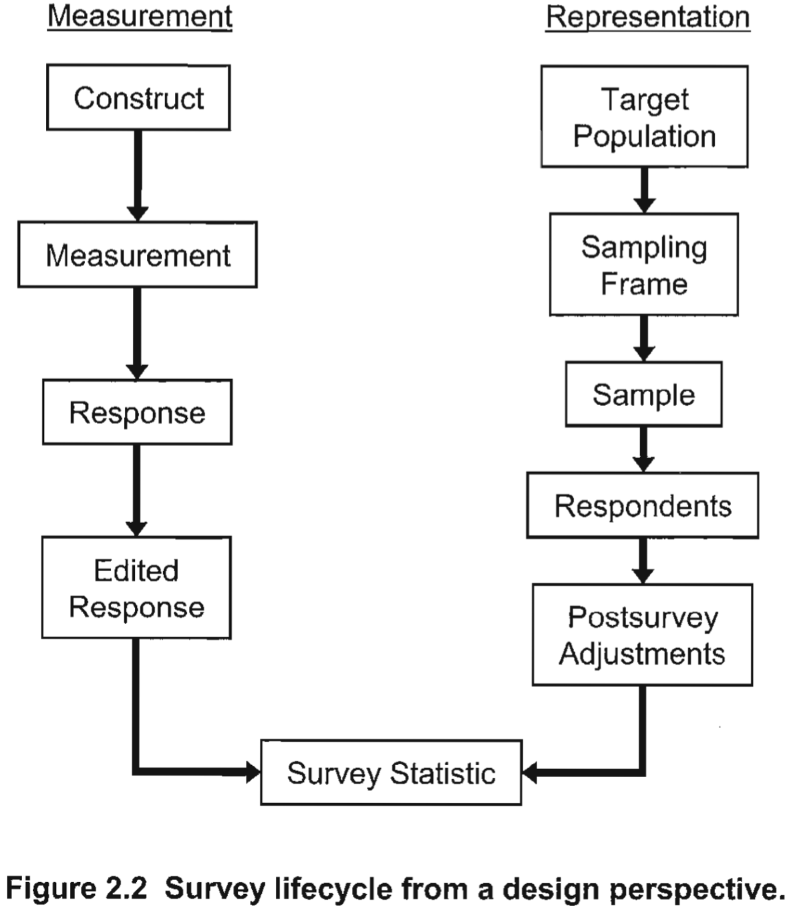
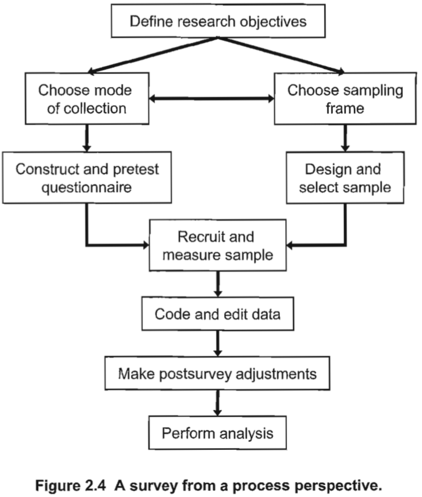
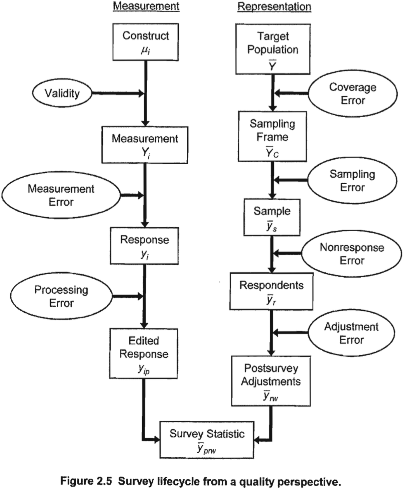
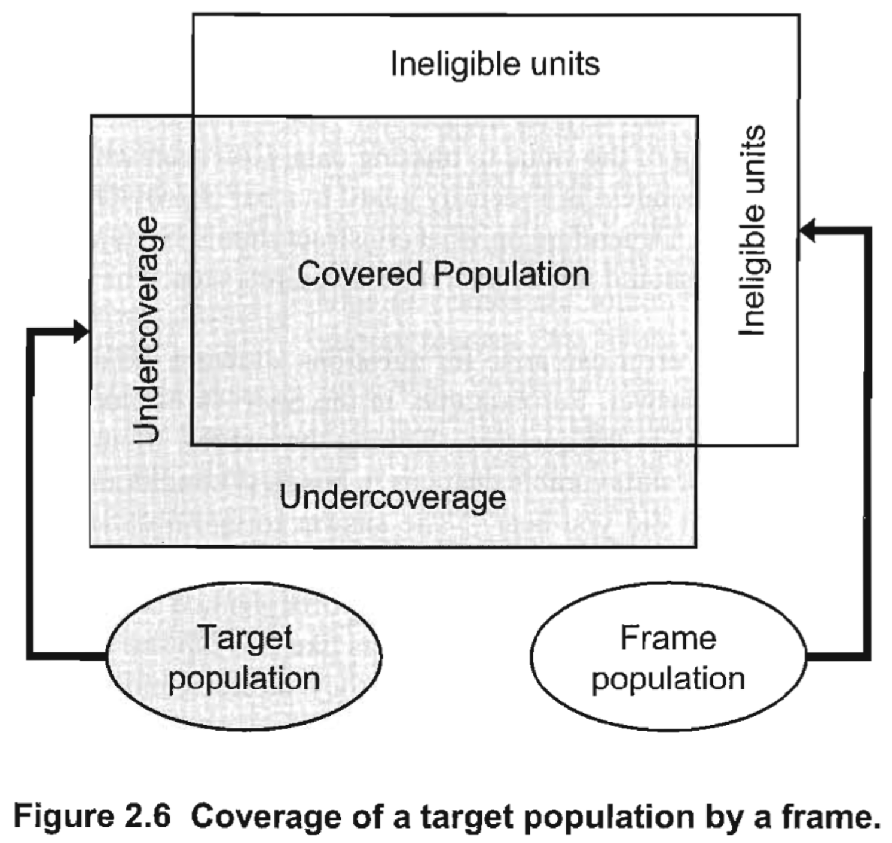

import pandas as pd
import dcss
dcss.set_style()7 Survey Data
In Progress
This is a “shitty first draft,” with some sections being shittier than others. Normally I wouldn’t share work so early in it’s development, but I’m interested in your feedback. Feel free to skim, but know that I am actively developing this chapter and it will be going through some very extensive changes in the coming weeks.
Learning Objectives
By the end of this chapter, you should be able to:
- Understand the evolving role of surveys in the 21st century
- Describe the key challenges in survey methodology and how they have changed
- Perform essential data processing for working with survey data
- Understand survey weights and how to use them appropriately
- Handle common issues such as missing data, inconsistent responses, and outliers
- Recode variables, including Likert and matrix questions, as needed for analysis
As you likely already know, survey research has a long history in the social sciences. Directly asking people what they think, believe, feel, and do is essential for most research in the social sciences, but declining response rates, non-representative samples, and other challenges has made it increasingly difficult to do good survey research. But survey research is evolving. For example, innovative methods such as post-stratification and Bayesian multilevel regression with post-stratification (MRP) enable us to make valid inferences from non-probability samples, and the rise of smart phones has prompted innovations in how surveys are administed, how questions are asked, and how data are linked with other datasets (e.g., social media data).
Even with advances such as these, the fundamental principles of survey methodology still apply, and the total survey error framework is a helpful way to think about this. It emphasizes the distinction between sampling error and non-sampling errors, such as measurement error (e.g., when people misunderstand a question or misreport their views) and nonresponse bias (e.g., when certain groups are underrepresented because they are less likely to respond to the survey). These errors affect all surveys, and while some can be mitigated through careful design, others need to be addressed in the data cleaning phase.
This chapter will address all of these themes to varying degrees, with a heavy emphasis on cleaning survey data for future analysis. We’ll start with…
7.1 Foundations of survey methodology: The total survey error framework
The Total Survey Error (TSE) framework is a comprehensive approach used in survey methodology to identify, evaluate, and minimize the errors that can occur throughout the survey process, compromising validity and reliability. These series of figures below – reproduced / adapted from Groves et al. (2011) Survey Methodology – illustrate different aspects of the survey lifecycle and identifies critical points where errors may arise, both in the design and execution of a survey.

Figure 7.1 illustrates the survey lifecycle from a design perspective, broken down into two main components: measurement** and representation. On one hand, measurement starts from the construct—the concept researchers aim to measure—and moves through the stages of actual response collection to the final survey statistic. Errors in this part of the process include measurement error, which occurs when there is a discrepancy between the concept researchers want to measure and what is actually measured (due to poorly designed questions, interviewer bias, etc.). On the other hand, Representation starts with the target population and moves through sampling to the final respondents who actually complete the survey. At each stage, sampling error, coverage error, and nonresponse error can occur, affecting how well the sample represents the broader population. Finally, post-survey adjustments help mitigate errors from nonresponse or misrepresentation but can also introduce adjustment error if done incorrectly.

Figure 7.2 outlines the stages involved in conducting a survey, starting with defining research objectives, and moving through sampling, questionnaire construction, data collection, data processing, and analysis. At the beginning of this process, researchers define research objectives that guide decisions about the sampling frame and mode of collection (in-person, telephone, online, etc.). These decisions influence both coverage and nonresponse errors. The process also includes pretesting the questionnaire to ensure clarity and reliability, which is an important step to minimize measurement error—errors that arise due to poorly worded questions or ambiguous response options. Finally, data adjustments and post-survey edits address additional errors that might occur, such as processing errors or misreporting during data entry.

Figure 7.3 offers a closer look at the survey lifecycle, specifically through the lens of errors that can affect measurement and representation. On the measurement side, errors are introduced from the moment the construct is conceptualized through measurement validity (whether the survey measures what it is supposed to) and measurement error (differences between the true value and the reported value). These can arise due to issues like unclear questions, recall bias, or misunderstanding by respondents. On the representation side, errors can occur at several stages:
- Coverage error happens when the sampling frame doesn’t fully cover the target population, leading to undercoverage or overcoverage.
- Sampling error occurs due to random chance when selecting a sample from the population.
- Nonresponse error is when certain individuals from the sample do not respond, potentially leading to biased results if non-respondents differ significantly from respondents.
- Adjustment error can arise during weighting or imputation when researchers attempt to correct for nonresponse or other biases.

Finally, Figure 7.4 highlights coverage error, more specifically the relationship between a target population (the group you want to generalize to) and the frame population (the group you can actually sample from). The covered population is the overlap between the target and frame populations, representing the portion of the target population that is actually included in the sampling frame. Undercoverage occurs when parts of the target population are not included in the sampling frame, meaning some eligible respondents are left out of the survey. A related problem is overcoverage, which can result when ineligible units are mistakenly included in the sampling frame even though they do not belong to the target population. Minimizing coverage error is critical for ensuring that survey results can be generalized accurately to the broader population.
Overall, the Total Survey Error framework emphasizes that errors can arise at all stages of the survey process, from design to data collection, and from data processing to analysis. It classifies errors broadly into representation errors (which occur due to issues with sampling and coverage) and measurement errors (which arise due to problems in how responses are collected and interpreted). Understanding and mitigating each type of error is crucial for improving survey accuracy. For example, careful question design (addressed in the article content you referenced on question characteristics and methods for assessing them) can reduce measurement error, while using appropriate sampling methods and post-survey adjustments can mitigate problems with coverage error and nonresponse error.
7.2 How survey research has evolved
While the classic foundation of survey methodology – as articulated in the Total Survey Error Framework – remains important, survey methodology has evolved significantly along the two lines of representation and measurement (via question asking). Let’s consider some of those changes now.
7.2.1 Sampling and representation
In the early days of survey research, political pollsters often used quota sampling, a non-probability sampling method where researchers try to match their sample to the population by selecting respondents based on certain demographic characteristics (like age, gender, and income). The aim was to create a microcosm of the broader population by setting quotas for each demographic group, making sure to include a proportional number of individuals from each category. This method was considered state-of-the-art at the time, and, in many cases, it worked reasonably well. However, it was not without its flaws, as the 1936 U.S. presidential election famously made obvious.
In 1936, the American magazine Readers Digest conducted one of the largest surveys ever attempted up to that time: 2.4 million people. Based on that survey, Readers Digest confidently predicted that the Republican candidate, Alf Landon, would win the presidential election in a landslide, beating the Democratic incumbent Franklin D. Roosevelt. Yet Roosevelt won with over 60% of the popular vote, carrying all but two states in one of the most decisive victories in U.S. history.
What went wrong with the Readers Digest poll? Easy: They had a very biased sample. Although the poll attempted to match the population demographically via quota sampling, it relied heavily on lists of telephone subscribers, car owners, and magazine subscribers to do so. In the 1930s, during the Great Depression, all three of these groups were disproportionately wealthy, white, and conservative. Since many Americans could not afford to own telephones or cars, the less affluent were severely underrepresented in the sample, and they who more likely to support Roosevelt over Landon. Quota sampling, while well-intentioned, could not overcome the bias introduced by the faulty sampling frame and resulted in wildly inaccurate predictions.
This famous failure highlighted the dangers of non-probability samples (where every member of a population does not have a known, equal chance of being selected) and drove innovations in sampling, chiefly the development of probability sampling techniques that produce more representative samples.
Contemporary survey research faces some similar challenges due to the rise of online panels and non-probability samples. Online panels are often based on voluntary participation; rather than randomly sampling people from a population, people opt into a survey panel, introducing potential biases. Like the 1936 Readers Digest poll, these modern non-probability samples may fail to represent certain segments of the population. People who spend time answering online questionnaires for survey panels differ from people who don’t. However, contemporary statistical techniques like post-stratification and Bayesian multilevel modeling have made non-probability samples much more useful.
- TODO: Update the text below.
One of the most striking examples of this is cite Gelman’s Xbox study. In 2012, Gelman and his collaborators used a non-representative sample of Xbox users—mostly younger men who were much more conservative than the general population—to predict voting behavior in the 2012 U.S. presidential election. Xbox users are not a random cross-section of the population; they tend to be younger, more male, and more politically conservative, characteristics that could introduce severe bias if the sample were analyzed without adjustments. However, using advanced techniques, Gelman’s team was able to produce remarkably accurate predictions. Here’s how they did it:
The researchers used post-stratification to adjust the data to better reflect the known characteristics of the U.S. voting population. Post-stratification works by dividing the population into different demographic groups (called “strata”) based on factors like age, gender, race, and education. After gathering the data, weights are applied to each group based on its proportion in the actual population. For example, since young, conservative men were overrepresented in the Xbox sample, their responses were down-weighted, while responses from older women were up-weighted to correct for their underrepresentation.
The researchers also used Bayesian multilevel regression to improve their predictions. This method allows for partial pooling, meaning that estimates for smaller or underrepresented groups (e.g., older women in the Xbox sample) are “borrowed” from similar groups to avoid overfitting and to stabilize the estimates. In this way, the model could leverage patterns across different groups to make better predictions even when some strata had fewer respondents.
Despite using a highly non-representative sample, these techniques allowed Gelman’s team to accurately predict the outcome of the election. This study marked a significant shift in how researchers think about survey sampling, showing that non-probability samples—if adjusted properly with techniques like post-stratification—can still yield valuable insights.
To fully understand these developments, it’s helpful to clarify a few key concepts:
- Quota Sampling: In quota sampling, the researcher sets quotas for certain demographic categories (e.g., gender, age, income) to ensure that the sample reflects the population’s composition on these variables. However, within each category, respondents are selected non-randomly, which can lead to bias if certain subgroups are over- or under-sampled (as happened in the 1936 Readers Digest poll).
- Non-Probability Samples: A non-probability sample is one where not every individual in the population has a known or equal chance of being selected. This includes convenience samples (e.g., surveying people who are easily accessible), voluntary response samples (e.g., online panels where participants opt in), and snowball samples (e.g., respondents recruit others to participate). The challenge with non-probability samples is that they may not accurately represent the population, leading to biased results.
- Post-Stratification: This is a technique used to correct for biases in non-probability samples by weighting the data according to known population characteristics. It’s often used in conjunction with Bayesian methods to adjust for the over- or under-representation of certain groups in the sample.
By combining non-probability samples with advanced techniques like post-stratification and Bayesian modeling, contemporary researchers can make surprisingly accurate inferences about the broader population, even from biased or incomplete samples. This represents a major evolution from the quota sampling methods of the early 20th century, highlighting the power of modern statistical methods to overcome the limitations of non-probability sampling.
In sum, while early attempts at survey sampling, like the 1936 Readers Digest poll, illustrated the pitfalls of non-representative samples, modern techniques have transformed the way we handle survey data. Non-probability samples, once considered unreliable, can now produce accurate results through methods like post-stratification and Bayesian multilevel modeling, as shown in the Xbox study. These advances mark a major shift in survey research, allowing us to better navigate the challenges of representation and make more informed inferences about public opinion and behavior. We will learn about both in this book, but not yet! There’s a good amount of foundational work to do first.
7.2.2 The science of asking questions: past and present
The second major change in survey methodology is related to how we ask questions. The way questions are phrased can dramatically influence responses—a phenomenon known as question wording effects. Even small changes in phrasing can lead to different answers. For example, asking “Do you approve of the government’s handling of the economy?” might yield different results than “Do you think the government has done a good job managing the economy?” This is partly due to social desirability bias, where respondents may choose answers they think are socially acceptable rather than ones that reflect their true thoughts. Moreover, context effects, such as the order in which questions are asked or the types of response options available, can further bias responses by subtly guiding respondents toward certain answers.
The structure of response options has long played a critical role in survey design. Researchers have known for decades that the placement of response options can lead to order effects (respondents are more likely to choose options that appear at the beginning or end of a list). Similarly, the way response options are framed, such as presenting extreme versus moderate choices, can nudge respondents toward particular answers. For example, if a question offers responses ranging from “terrible” to “excellent,” respondents may gravitate toward moderate choices. Effective survey design must account for these influences to minimize bias and elicit more reliable and valid responses. Crafting survey questions is both an art and a science.
While the fundamental challenges of question design have persisted over time, the science of asking questions has evolved significantly. In a recent review article, Schaeffer and Dykema (2020) highlighted how survey design and methodology has moved toward decision-based frameworks that seek to identify question characteristics that influence respondent behavior. This marks a shift from earlier research that often focused on isolated elements like question wording, toward a more comprehensive approach that accounts for the co-occurrence of question characteristics. (TODO: Provide an example here.)
One significant change is the expanded use of fully labelled options for response categories. In the past, it was common to rely on numeric scales or partial labeling, but recent research shows that using fully labeled response categories, like “not at all” to “extremely,” increases reliability across diverse modes of data collection, particularly in self-administered surveys. The use of five response categories has become a standard, as this number strikes a balance between providing enough granularity for nuanced responses without overwhelming the respondent.
Another important shift in recent years is that item-specific (IS) response formats that ask respondents about the topic in question directly (e.g., “How satisfied are you with your job?”) are now heavily favoured over traditional agree-disagree (AD) scales that pose a statement and ask the respondent whether they agree (e.g. “I am satisfied with my job” — agree or disagree?).
AS scales such as these are falling out of favour for several reasons, most importantly their susceptibility to biases like acquiescence (the tendency to agree with statements) and extreme responding. IS formats have been shown to providing more accurate data by reducing these biases. This shift represents an important development in the field, addressing long-standing issues with response quality.
The rise of self-administered web and mobile surveys has also brought new challenges and innovations in question design. In earlier decades, most surveys were administered face-to-face or via telephone, which allowed interviewers to clarify questions and guide respondents through the survey process. With the shift toward self-administered surveys, researchers have had to design questions that work across diverse modes and platforms, including small mobile screens where question length, complexity, and presentation can significantly impact data quality.
One response to this challenge has been the development of dynamic filtering, which allows follow-up questions to be triggered based on respondents’ initial answers. This technique reduces cognitive load and improves data quality by preventing respondents from having to answer irrelevant questions. Similarly, yes-no checklists are now preferred over traditional check-all-that-apply (CATA) formats, which tend to under-report responses. Yes-no checklists prompt respondents to actively consider each option, leading to more complete and accurate answers.
- TODO Add some screenshots of old and new designs here to help clarify these points.
Additionally, the shift to mobile-first design has led to a reconsideration of grid formats and question batteries. While early research suggested that grids, which present multiple related questions in a single visual format, could save time and reduce respondent burden, more recent research shows that grids can lead to straightlining, where respondents provide the same answer across all questions to expedite the process. This is particularly problematic in mobile surveys, where the small screen size makes grids harder to navigate. Presenting questions individually has been found to improve data quality, especially in mobile contexts.
As researchers continue to refine methods for assessing data quality, new challenges will emerge, particularly in an era of mixed-mode and mobile-first surveys. The current state of the art includes innovations like item-specific formats, fully labeled response scales, and adaptive technologies such as dynamic filtering, all of which reflect an ongoing effort to optimize survey design across modes and respondent groups. These advancements show a clear trajectory toward more respondent-friendly surveys that reduce bias and improve the validity of the data collected.
In sum, the field of survey question design has moved from focusing on individual elements of question structure to a holistic, decision-based approach that accounts for the complexities of modern data collection environments. This evolution reflects broader changes in the landscape of survey research, where technological advancements and an increasingly diverse respondent base demand ever-more sophisticated tools for capturing reliable, valid data.
7.2.3 Linked data
A third and final development in modern survey research is a greater reliance on linking survey data with other datasets.
Another exciting development in recent years has been the integration of social media data into surveys. Researchers like Chris Bail have pioneered methods for linking social media behavior with survey responses, allowing us to explore how online activity shapes opinions and behaviors. In my own work with David, we’ve taken this a step further by asking survey respondents to provide their social media handles, allowing us to combine readymade and custommade data sources in innovative ways. This combination of direct and passive data collection opens up new possibilities for understanding complex social phenomena.
- Harper government and the census, recordlinkage in government
- Henrickson and the socio-ecological systems stuff
- Bail and the social media surveys
7.3 Processing Survey Data
Now that we’ve covered the broader context of survey methodology, past and present, let’s dive into the practical side of working with survey data. Before you can even begin to analyze your data, there are a number of essential tasks you’ll need to complete to ensure your data is clean and ready for analysis. This data processing work is a crucial part of any research project; talk to anyone with experience doing this kind of work and they’ll tell you how important, and time consuming, this work can be.
Some of these tasks are common to all datasets, while others are specific to survey data, such as dealing with missing responses or applying survey weights. In this chapter, we’ll go through these steps one by one, using a panel survey from Canada as our working example.
As always, we’ll start by importing packages.
7.3.1 The Canadian Election Studies
For this chapter, we’ll be using data from the 2021 Canadian Election Study (CES-2021). The CES consists of two main surveys: the Campaign Period Survey (CPS), which was conducted during the 2021 federal election campaign, and the Post-Election Survey (PES), which followed shortly after the election.
The CPS ran from August 17 to September 19, 2021, and was divided into three waves:
- The first wave, the CPS, was the initial survey.
- The CPS Modules included additional questions and ran later in the campaign.
- The CPS Oversample wave was designed to collect responses from regions that were underrepresented in the initial waves.
After the election, all CPS participants were re-contacted for the Post-Election Survey (PES). The response rate for this follow-up was 72%, resulting in 15,069 completed surveys. The CES is a great example of a large, complex survey dataset, with multiple waves and extensive data cleaning procedures.
One of the key features of the CES is the use of survey weights, which are designed to make the sample more representative of the Canadian population. The weights adjust for differences in the likelihood of respondents being selected based on factors like region, gender, and age. In a later section, we’ll explore how to apply these weights in your analysis to ensure your results are valid.
7.3.2 Download the data
You can download the datasets as zip files from their respective Dataverse repositories.1
- 2019 Phone Survey
- Store in
data/canadian_election_studies/Canadian-Election-Study-2019
- Store in
- 2019 Online Survey
- Store in
data/canadian_election_studies/Canadian-Election-Study-2019
- Store in
- 2021 Surveys
- Store in
data/canadian_election_studies/Canadian-Election-Study-2021
- Store in
Alternatively, you can use the download_dataset function from dcss, which will download and file the datasets for you.
ces_url = "https://www.dropbox.com/scl/fo/hdqfapeqaiwk47t885iwg/ANjnpc8u4rnuMQ83TXExzQ4?rlkey=t6olw4xekzjm46mx8ndjgqrit&st=dlunronk&dl=0"
dcss.download_dataset(
ces_url, 'data/canadian_election_studies/'
)File already exists at 'data/canadian_election_studies/'. Skipping download.7.3.3 Load the Data
In this case, the researchers CITE have made the data available as .dta files, which are a format used by the proprietary software Stata. We can read these files into memory using Pandas read_stata() function, which we do for the 2021 survey data below.
ces21 = pd.read_stata(
'data/canadian_election_studies/Canadian-Election-Study-2021/2021 Canadian Election Study v2.0.dta', convert_categoricals=False)Once the data is loaded, one of the first things you’ll want to check is the size of the dataset—how many rows and columns are there? This will give you a sense of how large the survey is and help you plan your analysis. We can do this using the .shape attribute for dataframes.
ces21.shape(20968, 1059)We can also get a quick overview of the dataset by using the .info() function, which will show us the number of columns, their data types, and whether there are any missing values.
ces21.info()<class 'pandas.core.frame.DataFrame'>
RangeIndex: 20968 entries, 0 to 20967
Columns: 1059 entries, cps21_StartDate to pes21_weight_general_restricted
dtypes: datetime64[ns](7), float32(22), float64(753), int16(2), int32(2), int8(180), object(93)
memory usage: 142.1+ MBIn this dataset, we have a wide variety of data types. Some variables are stored as integers, while others are stored as floats or strings. Note that Pandas infers these dtypes when it loads the data. As we shall soon see, some may not be ideal for our purposes. It’s important that the data types are appropriate for each variable before proceeding with analysis, as misclassified types can cause problems later on. We’ll do that shortly.
7.4 Study the Codebook
Before diving deeper into the data, it’s essential to take a close look at the codebook. The codebook is your guide to understanding what each variable represents, how the data was collected, and any quirks you should be aware of (such as how missing data is coded or how questions were worded). You can find the codebook for this dataset in the Technical Report and Codebook PDF file.
In particular, pay attention to the survey design and sample design sections, as they explain how the data was collected and the rationale behind the survey weights. After that, you’ll want to spend some time familiarizing yourself with the variables in the dataset, especially any you expect to be working with.
7.4.1 Understanding the sample design and survey weights
- TODO: Add content on the CES design here instead? Or not?
One of the most important features of survey data is the use of survey weights. These weights are used to adjust the sample so that it more accurately reflects the population from which it was drawn. For example, if women are overrepresented in the sample, the weights will adjust their contribution to the analysis to prevent bias.
There are different types of weights, including base weights, which correct for unequal probabilities of selection, and post-stratification weights, which adjust for nonresponse and other factors. In the CES, we have a variety of weights to choose from, depending on the specific analysis we want to conduct.
7.4.2 Applying Survey Weights
Applying weights is straightforward in most statistical software, and Pandas is no exception. Let’s say we want to compare the weighted and unweighted mean of a particular variable. We can do this by applying the appropriate weight variable to our analysis.
- TODO: Add an example to illustrate how applying weights can shift survey results. For instance, show a comparison between unweighted vs. weighted means or proportions in a simple analysis, using the CES dataset.
# Example here7.4.3 Assessing Data Quality
Once you’ve familiarized yourself with the sample design and applied the necessary weights, your next step should be to carefully assess the quality of the survey data. There are a few common problems to look out for, including inconsistencies, outliers, and missing data.
Survey data often contains inconsistencies, particularly in panel surveys where the same respondents are surveyed multiple times. For example, a respondent’s age or region of residence might be reported differently across waves. It’s important to identify and correct these inconsistencies before proceeding with analysis.
# Example hereIn addition to inconsistencies, you should also check for outliers—extreme values that might skew your results. In survey data, these can sometimes be caused by respondents rushing through the survey or providing inaccurate answers. One way to detect this is by checking the distribution of survey completion times. Respondents who completed the survey in an unusually short time may not have been paying full attention.
# Example hereSpeeders—respondents who rush through the survey—can introduce bias into your data. There are a number of techniques for identifying speeders, including setting a minimum threshold for survey completion time or using attention-check questions to detect inattentiveness. If you suspect that certain respondents weren’t paying attention, you may want to exclude them from your analysis.
# Example hereAnother common issue in survey data is response bias, where respondents may answer questions in a way that reflects social desirability rather than their true opinions. For example, people might be reluctant to express unpopular views or admit to certain behaviors. While it’s difficult to eliminate response bias entirely, being aware of it and using techniques like randomized response – DEFINE – can help mitigate its effects.
7.5 Handling missing data: Bad, less bad, and good imputation practices
Survey data often contains missing responses, and how you handle them can have a big impact on your analysis. There are three main types of missing data, all fairly poorly named in my opinion:
- Missing Completely at Random (MCAR), where the missingness is entirely random and unrelated to any other variable;
- Missing at Random (MAR), where the missingness is related to some observed variable but not to the missing data itself; and finally
- Missing Not at Random (MNAR), where the missingness is related to the value of the missing data.
In most cases, we assume that data is MAR, and there are several methods that we might use in response, including:
- listwise deletion (removing all cases with missing data),
- mean imputation (replacing missing values with the mean),
- multiple imputation (define), and
- Bayesian imputation (define).
While listwise deletion and mean imputation are easy to implement, they are generally poor choices. Mean imputation, for example, ignores variability in the data and can lead to biased estimates. A better approach is to use multiple imputation, which accounts for uncertainty in the missing data by creating several different datasets with imputed values and then combines the results. However, there are problems with this approach as well, such as limitations. The gold standard is Bayesian imputation, which is fully integrated into Bayesian models. Since I haven’t even defined “Bayesian” yet, we’ll set this method aside for now and return to it in later chapters. When we do, you’ll be delighted to learn that we don’t have to do anything special; Bayesian inference gives it to us for free!
- TODO: Missing data in this chapter specifically…
# Example here7.5.1 Recoding Variables
One of the most common tasks in survey data processing is recoding variables. This is especially important for categorical variables, where you might need to collapse categories or create dummy variables. For example, if you have a variable with multiple levels of education, you might want to recode it into a simpler variable with just two categories: “college degree” vs. “no college degree.”
In addition to recoding categories, you may also need to reverse score some variables. This is common with Likert-scale questions, where higher values indicate more agreement or approval. If some items are negatively worded, you’ll need to reverse the scale so that all items point in the same direction.
# Example here7.6 Grid Questions
As I mentioned earlier, grid questions are falling out of favour in survey methodology. However, you’ve very likely to encounter them, especially if you are working with longitudinal data or older surveys. With these questions, respondents are asked to rate a series of items on the same scale (e.g., a series of agree/disagree statements). These questions can present some challenges when it comes to data processing, particularly if there are missing responses. One approach is to collapse related questions into indices or standardize scales so that the responses are comparable across different items.
The CES survey data contains several such questions, including…
# Example here7.6.1 Categorical Data
Most surveys include quite a lot of categorical data, which should be handled very carefully in any modeling.
When working with categorical data in Pandas, it’s important to make sure that our categorical variables are ordered properly and that “Don’t know / prefer not to answer” responses – which don’t fit neatly into ordinal data – are handled consistently. You’ll also need to decide how to represent your categorical variables in your analysis. In nearly all cases you’ll want to treat categories as index variables, but in some cases you may wish to do things the old-fashioned way and use one-hot encoding (i.e., creating dummy variables). The implications of this choice will become clear a little later in the book, when we get to multilevel models. For now, we’ll …
# Example here7.7 Reproducibility and Non-destructive Workflows
Before we conclude, I want to emphasize the importance of reproducibility and transparency in survey data work. It’s essential to work non-destructively, meaning that you should never modify your original data files. Instead, document all of your data cleaning and recoding decisions in your scripts and notebooks. This might seem tedious at first, but with practice, it becomes second nature and ensures that your work is both reproducible and ethical.
7.8 Conclusion
In this chapter, we’ve covered the essential steps in processing and cleaning survey data, from understanding the sample design and applying weights to handling missing data and recoding variables. These are the foundational tasks that will set you up for more advanced analysis in future chapters. In the next chapter, we’ll explore web and document data, where we’ll encounter many of the same issues—like missing data and recoding—but in a different context. Stay tuned!
Dataverse provides an API for accessing data programatically. You might want to experiment with it after working through the chapter Web data (APIs)↩︎